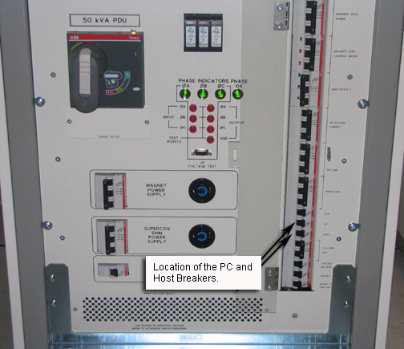
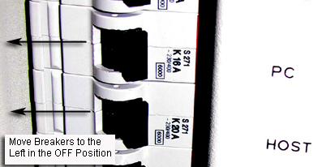
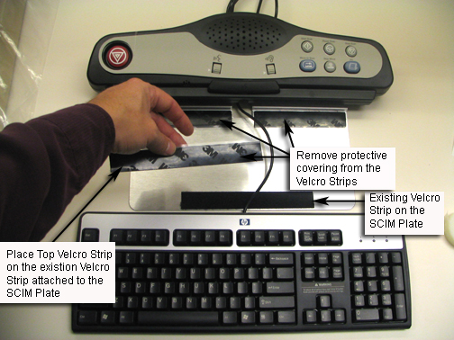
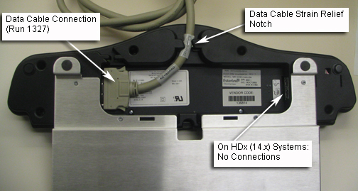
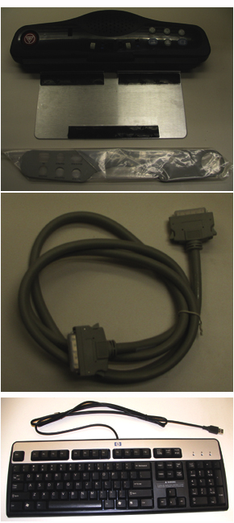
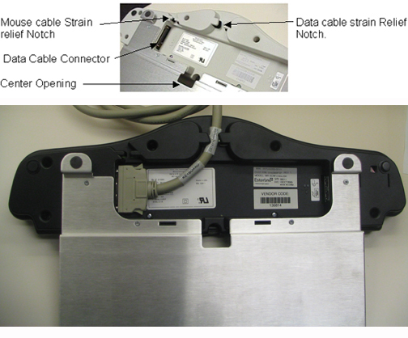
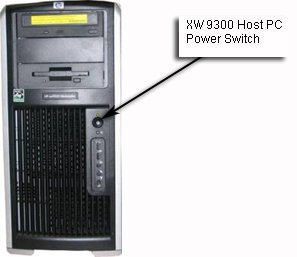

Operating Documentation
Direction 5440000, Rev# 5
Signa HDxt Service Methods
Module Version 1.0, Version Date 4/26/07
Operating Documentation |
| Required Persons | Preliminary Reqs | Procedure | Finalization |
|---|---|---|---|
| 1 | Not Applicable | 20 mins | Not Applicable |
In this section you will replace the old keyboard or install the new keyboard.
| Item | Qty | Effectivity | Part# | Manufacturer | |
|---|---|---|---|---|---|
| SCIM with English Template installed | 1 | - | 2289697-2 | - | |
| Data Cable | 1 | - | 2262158-9 | - | |
| Standard USB US English Keyboard | 1 | - | 2275756 | - | |
| International Languages Overlay package | 1 | - | 5148389-9 | - | |
| Condition | Reference | Effectivity |
|---|---|---|
Host Computer and GOCAA Powered Off | - | - |
Bring the Signa software down.
Single-click on the Toolbelt icon.
Single-click on the [System Shutdown] button on the Service Desktop Manager.
Select [OK] to confirm the shutdown.
Wait for the system to indicate on the monitor that it is safe to power off the computer before proceeding. (This usually takes about 90 seconds before this message is seen.)
Remove power to the Operators Workspace by shutting off the PC and Host breakers on the front of the PDU. See Illustration 1 and Illustration 2.
Illustration 1: Breaker Locations on PDU

Illustration 2: Move Breakers to OFF Position

Lock and Tag the Breaker Panel on the PDU.
Disconnect the USB cable from the keyboard. Run 1326. This is a one-meter long USB extension that goes directly to the host computer.
Lift up on the Keyboard to detach it from the SCIM base plate. The keyboard is attached with Velcro.
Pull the cable and defective Keyboard clear of the SCIM and set it aside
Place new Velcro strips on the top of the strips attached to the SCIM as shown in Illustration 3.
Illustration 3: Placing Velcro Strips

Pull the replacement keyboard USB cable through the opening in the SCIM.
Remove the protective covering from the Velcro, see Illustration 3. Position the replacement keyboard, then firmly push down to fasten Velcro.
| NOTE: | The glue on the Velcro must be given time to set. Do not attempt to remove the keyboard from the SCIM for 24 Hrs. |
Connect the keyboard USB cable to the Host Computer (Run 1326).
This completes the Keyboard Replacement. Proceed to Finalization, Step 1.
Unplug the defective Mouse from the host computer USB connector.
Install the new mouse by plugging it directly into the host computer USB connection.
This completes the Mouse Replacement. Proceed to Finalization, Step 1.
Disconnect the USB cable from the keyboard. Run 1326 This is a one meter long USB extension that goes directly to the host computer.
Lift up on the Keyboard to detach it from the SCIM base plate. The keyboard is attached with Velcro.
Pull the cable and Keyboard clear of the SCIM and set it aside
Turn the SCIM over to expose the cable connections. See Illustration 4.
Illustration 4: Data Cable Connection

Remove the Data cable from the defective SCIM. On excite HD-X the data cable is the only cable that needs to be removed. The Keyboard and Mouse connect directly to the host computer through a USB connection.
Turn the replacement SCIM over to expose the cable connections, as in Illustration 4.
Connect the data cable to the new SCIM, see Illustration 4.
Turn the SCIM over (top facing up).
Pull the keyboard USB cable through the opening in the SCIM. See Illustration 3.
Remove the protective covering from the Velcro, see Illustration 3. Position the keyboard then firmly push down to fasten Velcro.
| NOTE: | The glue on the Velcro must be given time to set. Do not attempt to remove the keyboard from the SCIM for 24 Hrs. |
This completes the SCIM Replacement. Proceed to Finalization, Step 1.
Remove the SCIM, Data Cable, Keyboard and SCIM language overlay from the box. The data cable is run 1327.
Illustration 5: SCIM Kit Contents

| NOTE: | SCIM's come with one overlay for the selected language. |
| NOTE: | For the availability of other languages check the Sales Catalog. |
Illustration 6: Language Overlay

Remove the Protective film from the language overlay and position it over the SCIM. When you are satisfied it is in the proper position, rub your finger over it lightly, in between the Scan buttons and around the Emergency Stop button to press it in place, see Illustration 7.
Illustration 7: Data Cable Connections

Flip the SCIM unit up side down exposing the cable connections.
Attach the data cable:
Attach the data cable (From GOCAA J6 RUN 1327) to the SCIM Scan-Control Intercom Module. See Illustration 7.
Connect the other end of the Data cable to J6 in the GOCAA.
Flip the SCIM over so it is right side up and guide the keyboard cable through the center opening. See Illustration 7 for location of center opening.
Center the keyboard, Flipping it on top of the SCIM patient speaker (Bottom of keyboard facing up) Keep the Cable as short as possible so when the key board is flipped right side up onto the Velcro, the keyboard cable does not interfere with the installation.
Remove the plastic strips from the Velcro, exposing the adhesive surface. See Illustration 8.
Illustration 8: SCIM Velcro Strips

Guide the cable back into the center notched opening until all the remaining cable is under the SCIM base.
Place the keyboard tight against the SCIM, Center it as best as possible, and drop into place. The Velcro pads will now be sticking to the bottom of the keyboard.
| NOTE: | The adhesive on the Velcro takes 24 hours to completely adhere to the bottom of the keyboard. Allow the adhesive to dry completely before removing keyboard from SCIM base. |
Illustration 9: SCIM And Keyboard Assembled

Position the SCIM Assembly in front of the monitor and guide any excess data cable through the opening provided in the Workspace Desktop.
Connect the USB cable from the Keyboard to the USB connection on the host Computer. This is achieved by connecting the keyboard USB to Run 1326.
Plug the mouse cable directly into the USB port on the Host computer.
This completes the installation of the SCIM Assembly. Proceed to Finalization, Step 1.
Remove LOTO from the breaker panel and turn the Host and PC Breakers on the PDU back to the ON Position. (Move the Breakers to the right.)
Start the Host Computer by pressing the ON button. The computer will run the boot Sequence.
Illustration 10: Host PC Power Button Location

Log in: SDC
Password: adw2.0
When the system is fully booted perform a scan to ensure proper operation of the system.